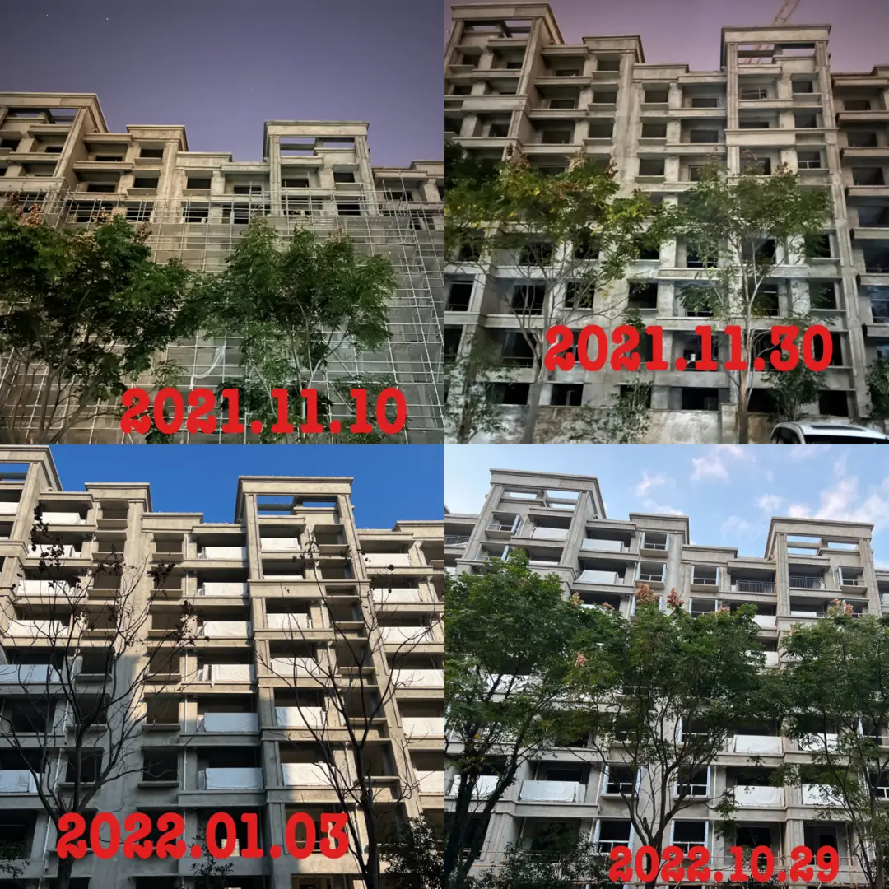
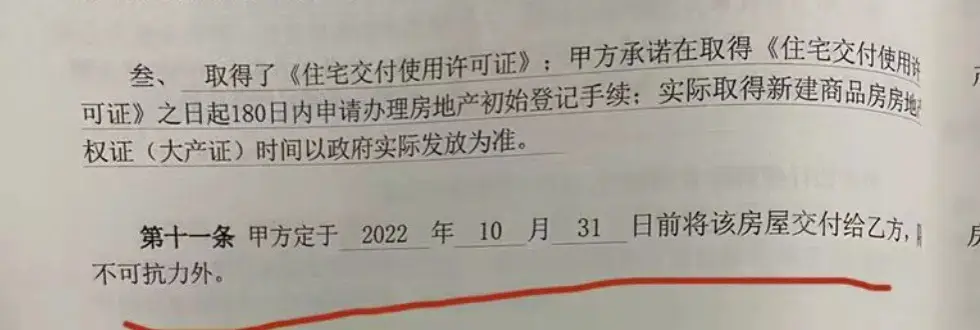
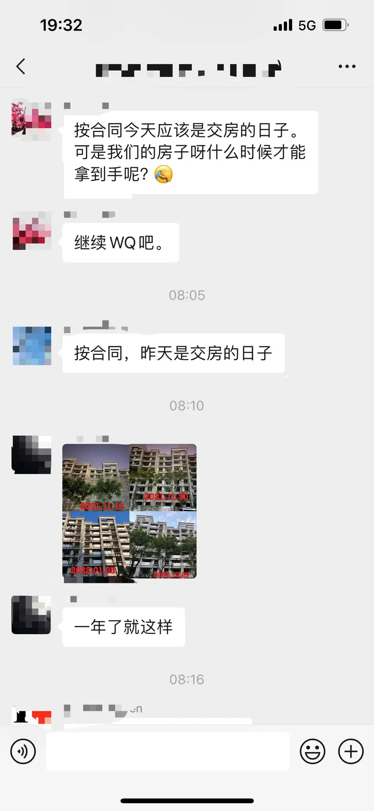
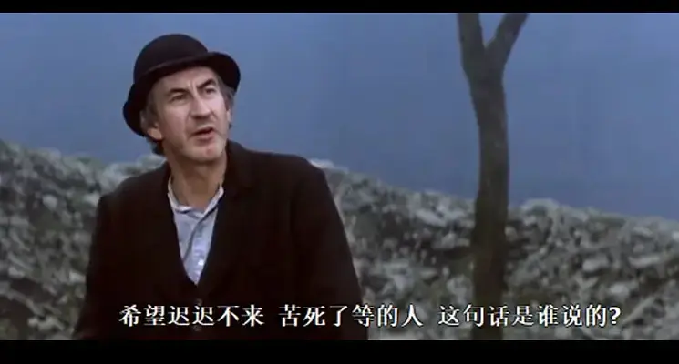
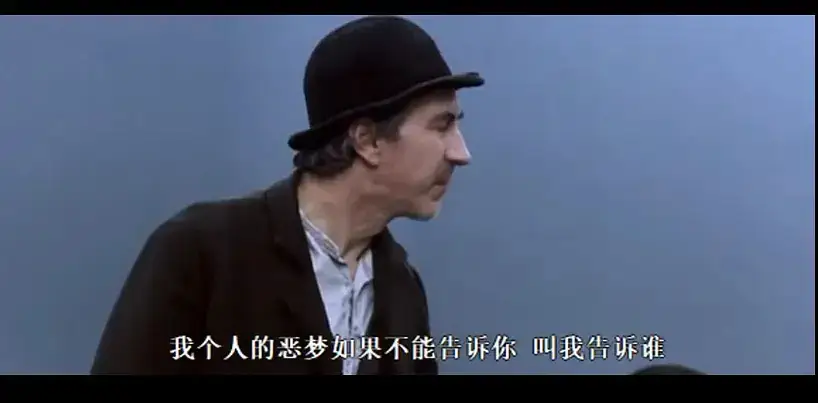
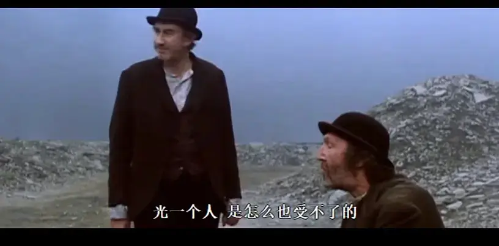

今天。
是2022年11月1日。
对于很多人，也许没有什么特别的感觉。
但是对于我们六百个家庭。
今天是，经纬置地有限公司正式违约的开始。

△经纬学府阳光位于宝山中环旁上大板块，该区域为上海市五大重点转型区域之一，同时也是宝山建设上海科创中心主阵地的核心承载区之一，开发商为经纬置地有限公司，该楼盘总价在500-600万，均价为5.72万/㎡，自去年11月停工至今年9月初，9月开始复工，但工程进度落后于给出的承诺
也是我们一千多人的至暗时刻。

时间到了，焦虑、苦涩、悔恨、恐慌等情绪也就跟着来了。

时间。
是一个非常值得探讨的话题。
关于我与这套房子之间的时间问题。
我印象最深的是。
去年3月份买房子的时候。
我记得付了定金后。
经纬给我了我3天时间，要求必须三天后就付足首付款。
这个时间不容挑战。
于是，我和家人们，在那3天里，到处抓借。
硬是在三天内，我用大力金刚指掏空了6个口袋。
之后印象比较深的时间问题。
是今年的1月份。
房贷下来了。
于是，每个月的20号。
不论我因为疫情受到什么样的影响。
不论我自己有没有收入。
也不论我的房子是不是在正常建造。
我必须，老老实实，在20号那一天，把房贷存到银行卡里。
这是我与这套房子的第二个时间问题。
这个时间，要求我必须马不停蹄的跑下去。
紧接着，是第三个时间问题。
这个问题，让我变成了现代戈多。
在7月份我得知房子已经停工好几个月的时候。
我知道今年10月份交房无望了。
我就像塞缪尔·贝克特笔下的戈多一样。
我站在路口。
我在等一个正正常常，可以给我和家人温暖安全的房子。

我心里想着他应该能来。
但是我不知道什么时候能来。
正因为我不知道他什么时候能来。
所以我又经常陷入到害怕他不能来的恐慌中。

为了能够得到一个确定的答案。
我们拿出了人生中最大的勇气，做了很多的努力和尝试。
后来，有人给了我们答案。
但是这个答案却因为谎言而无法信任。
我们不可避免地再次陷入到等待的煎熬中。
原来，《等待戈多》并不魔幻，而是现实。
亦或者，我一直对我生活的社会认识不清，他原本就这么魔幻。
以上，是我们业主感受到的时间。
可我们感受到的时间，与别人感受到的时间不同。
对于经纬。
他要求别人交钱的时间，不容挑战。
自己给别人承诺的时间，毫无真诚。
在过去将近一年的时间里。
戈多们的时间是焦虑和不安。
经纬的时间是心安理得的划水。
而对于监管方。
他们的时间是用我们的房贷和税收去有条不紊的正常运营。
很有意思，因为同样的房子，三方的时间会交错在一起。
戈多在焦急等待，催促监管让开发商走快点
开发商在散步，告诉监管和戈多，他其实不是散步，而是在快走。
而监管一面推着开发商让他走快点。
一面告诉戈多，房子一定会来，但是日期没法承诺。
虽然，三方的时间会交错，更多时候，大家各有各的事情，各有各的立场。
大家的时间又彼此独立，并行而走。
我想，这就是人类悲欢难以相通的原因。
大家根本走在不同的路上。
所以，在这段时间里。
我失去了对上海的归属感。
因为我感受到了无助和恐惧。
但是，我相信人之所以为人，或者一个社会之所以是文明社会的原因。
在于，一方努力去体谅另一方的时间。
在他人的脉络中去理解他人。
这成为人与人之间互助的基础。
这里面是企业的诚信，是政府的民生，是戈多的安慰，也是一个社会的契约和温度。
这也是上海，作为一个国际化都市吸引人才的资本。
我代表其他业主，向曾经真心帮助我们 体谅我们的政府工作人员表达感谢。

未来如何，我不知道。
但是我想鼓励像我一样的戈多。
我们领略过凉薄，就要努力去温暖。
我们遭遇过不公，就不可以对其他人的不公视而不见。
过去的时间，已经撕开谎言，给出我们答案。
我们不能再天真。
我们要明白。
当我们在今天让渡了自由。
那么，明天我们将一无所有。
参考：
魔都的这趟车，我们累了。
-END-
家丑必须外扬
因为怕被家暴